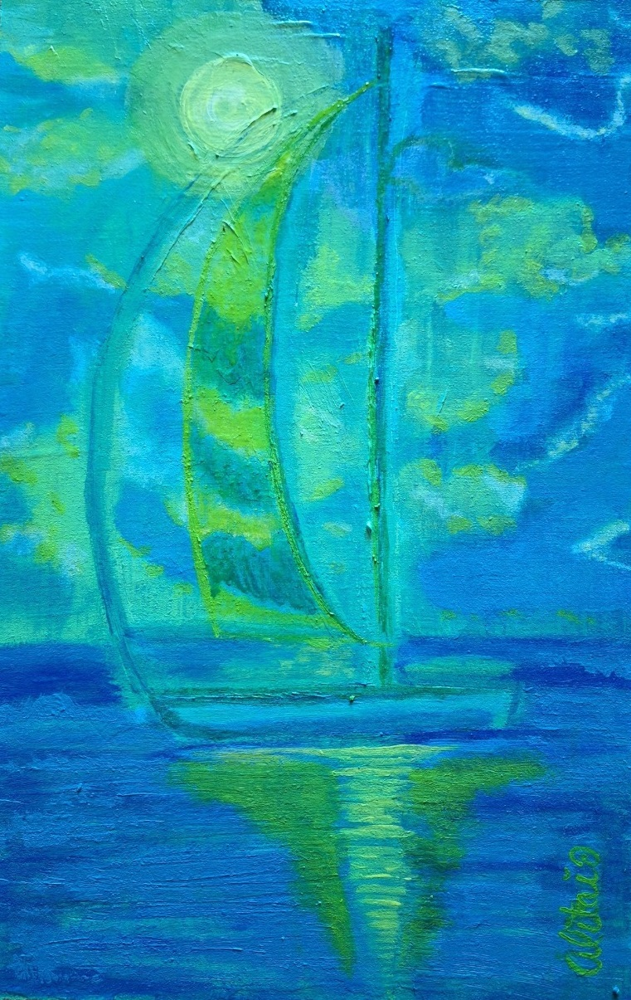
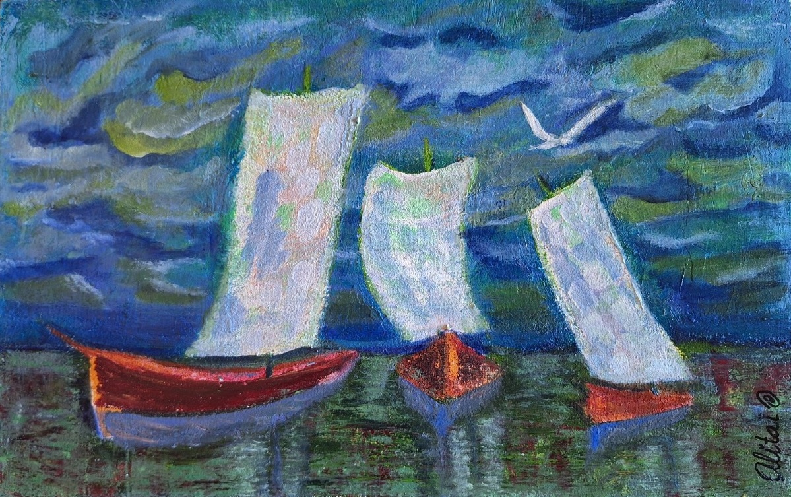
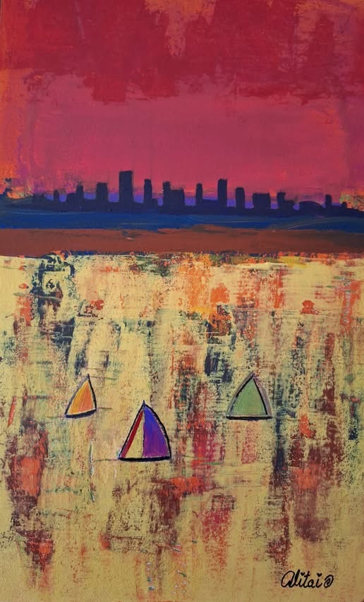
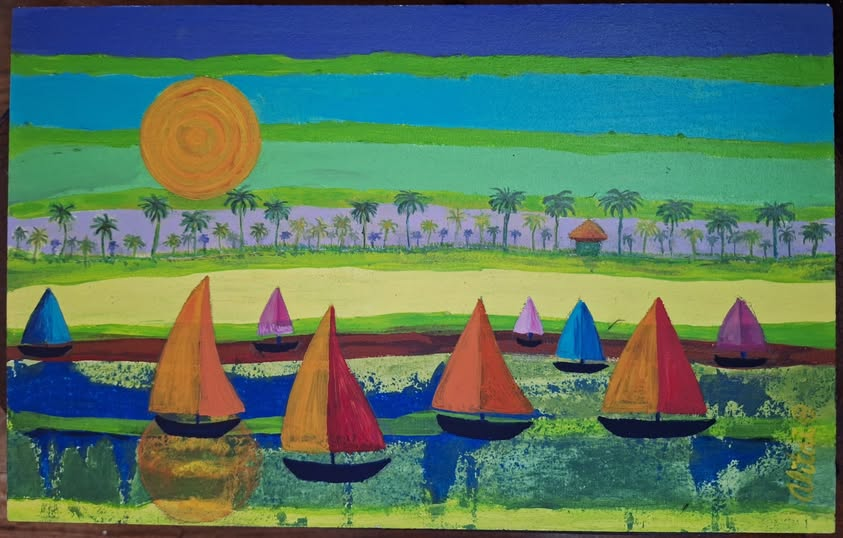
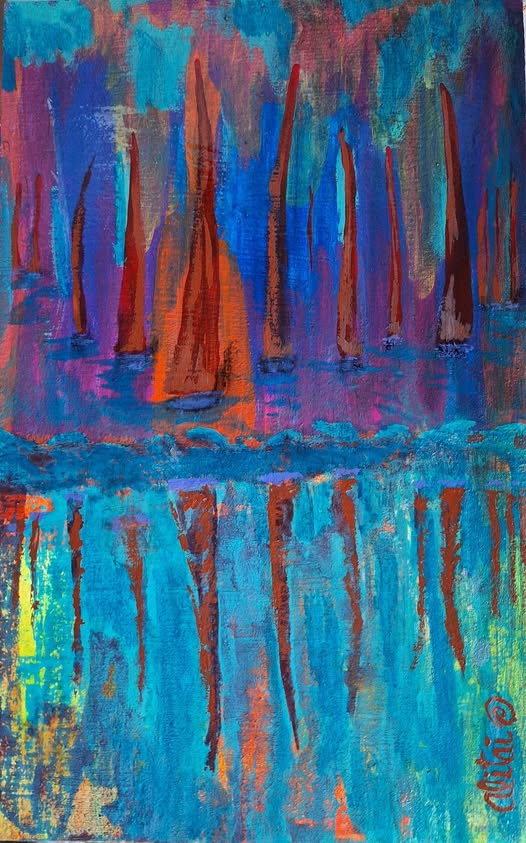
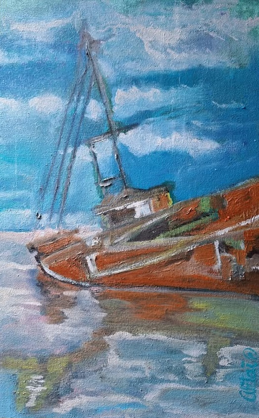
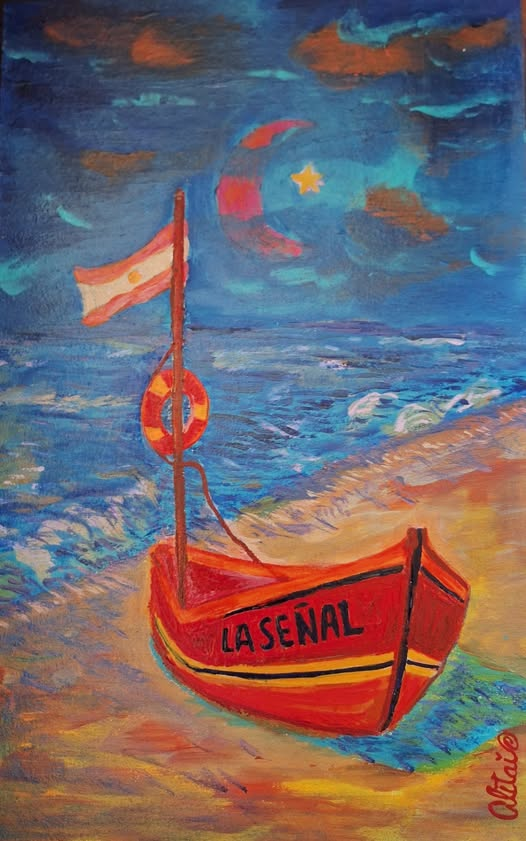
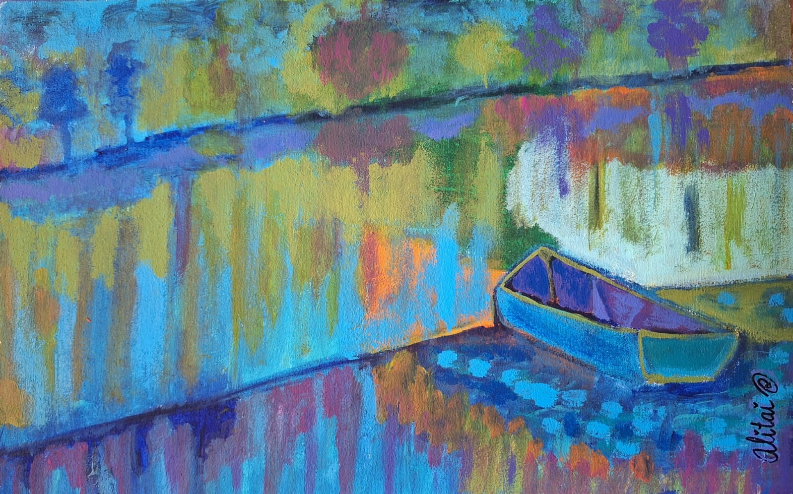
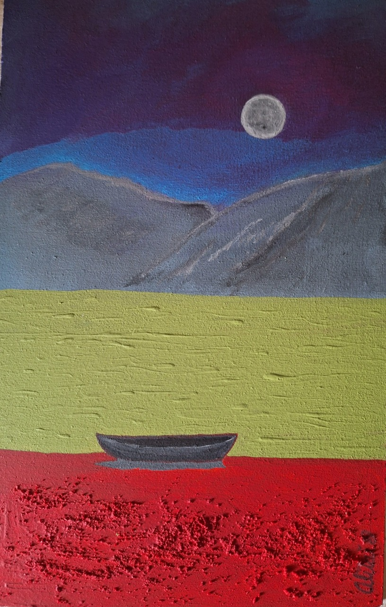
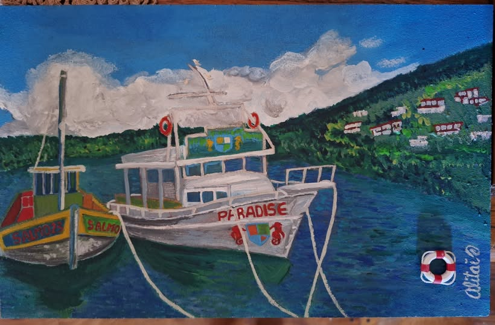

Velero Lunar
DM 23x36cm – Acrílico/ Año 2025
En la tradición egipcia, la barca solar es el vehículo sagrado en el que el dios Ra
recorre el cielo durante el día y el inframundo durante la noche. Es símbolo de
tránsito, de ciclo vital y de conexión entre mundos.
“Velero Lunar” retoma esa idea de viaje cósmico pero trasladado al poder de la luna
para pensarse como barca lunar complementaria a la solar, un símbolo que
equilibra el orden mítico. En Velero lunar, el alma zarpa hacia lo desconocido, pero
con la certeza de cada reflejo es un faro. La obra abre la serie como un primer
llamado: escuchar, confiar y navegar...

Tres Almas de Viento
DM 36x23cm – Acrílico/ Año 2025
La obra presenta tres veleros como espejos de los distintos rostros del yo. Cada
embarcación, con sus velas tensadas, simboliza una manera de habitar la vida: la
búsqueda, la resistencia y la entrega.
El agua, reflejo y frontera, multiplica la escena: no sólo vemos barcos, sino también la
proyección de los yo posibles. La obra se vuelve un mito íntimo, donde cada velero es
una parte del alma que navega entre el deseo de control, la aceptación del azar y la
entrega al impulso vital.

Reflejo Urbano
DM 23x36cm – Acrílico/ Año 2025
La ciudad también se mira en el agua. Las luces y los ruidos se disuelven en
vibraciones líquidas. Reflejo urbano habla del alma y el instante donde la conciencia
reconoce su propia forma en el caos.

El Horizonte como Reflejo
DM 36x23cm – Acrílico/ Año 2025
El horizonte deja de ser límite y se convierte en espejo. Cielo y agua se
confunden en un mismo plano: el adentro y el afuera son lo mismo. En esta
obra, el reflejo revela lo esencial: lo que percibimos como distancia es, en
verdad, unidad. Horizonte como reflejo propone una reconciliación: dejar de
buscar afuera lo que ya brilla adentro.

Regata de reflejos
DM 23x36cm – Acrílico/ Año 2025
Regata de reflejos es un conjunto de luces y formas que navega sobre la superficie del
agua. Cada una es una conciencia distinta, una búsqueda propia, pero todas
comparten la misma corriente. Regata de reflejos celebra la multiplicidad dentro de la
unidad: almas que avanzan en paralelo, reflejando un mismo sol interior. Es la danza
de lo colectivo en armonía con el flujo universal.

Memoria anclada
DM 23x36cm – Acrílico/ Año 2025
Bajo la superficie, los recuerdos laten como ecos del pasado. “Memoria anclada”
simboliza el instante en que el alma decide soltar los lastres para poder flotar. Lo que
antes pesaba ahora se transforma en raíz: sostén y origen. El agua guarda la
memoria, pero también enseña a liberarla. En esa entrega, el viaje se purifica.

La Señal
DM 23x36cm – Acrílico/ Año 2025
Una luz, una vibración, una intuición sutil. La señal marca el instante en que el
viajero comprende que el camino siempre estuvo guiado. Es la revelación silenciosa:
el momento en que todo cobra sentido. El reflejo se transforma en mensaje: el agua
ya no devuelve la imagen, sino la dirección.

Barca en la orilla
DM 36x23cm – Acrílico/ Año 2025
La barca ya no navega reposa. La orilla representa el punto intermedio entre el viaje
y el hallazgo. En “Barca en la orilla”, el agua aún murmura, pero la calma domina. Es
un momento de contemplación antes del salto: el viajero reconoce que el destino no
está lejos, sino dentro. La quietud anuncia la llegada.

Donde reposa la noche
DM 23x36cm – Acrílico/ Año 2025
La noche se posa sobre el agua como un manto. No hay miedo, sólo silencio. En
“Donde reposa la noche” el reflejo es el espejo del inconsciente. Allí el alma se
enfrenta a sí misma, se reconoce. Es la antesala del despertar: descanso previo al
resplandor.

Salmo 23 - Paradise
DM 36x23cm – Acrílico/ Año 2025
Salmo 23: “Junto a aguas de reposo me pastorearé”. El viaje culmina en la fusión con
la fuente. Salmo23-Paradise representa el retorno al origen, al estado de gracia
donde el alma descansa en sí misma. El agua ya no refleja: se vuelve pura luz. La
obra cierra la serie como un acto de consagración: el paraíso no es un lugar, sino un
reflejo interior en calma.
El río lleva toda la serie hacia un destino luminoso.